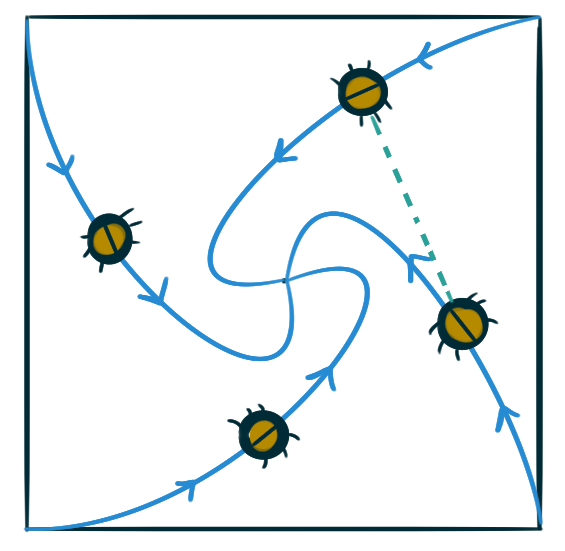

Consider a circle of radius \(r\) centered at \((0,r),\)
and consider the line \(y = 2r.\)
Imagine a ray emanating from the origin
initially pointed along the positive \(x\)-axis,
that begins sweeping in a counterclockwise direction,
inclined at an angle ranging from zero to \(\pi.\)
Consider the locus of all points \((x,y)\)
where \(x\) is the \(x\)-coordinate of the point
at which the ray intersects the circle,
and \(y\) is the \(y\)-coordinate of the point
where the ray intersects the line.
The resulting locus forms a curve
colloquially known as the witch of Agnesi.
Find an explicit parameterization of this curve.
The wild grass around farmer John’s grain silo
has grown to be too tall.
He’s decided to tether his billy goat to the silo
to wander around and eat the grass.
Suppose the diameter of the grain silo is twenty feet.
How much grass (ft²) can the goat eat
if the length of its tether is \(10\pi\) feet?
How much grass (ft²) can the goat eat
if the length of its tether is \(10\) feet?
How much grass (ft²) can the goat eat
if the length of its tether is \(20\pi\) feet?
Given two points \(\left(r_1, \theta_1\right)\)
and \(\left(r_2, \theta_2\right)\) expressed in polar coordinates,
what’s a formula for the distance between these points.
Four bugs are placed at the four comers of a square with side length one.
The bugs crawl counterclockwise at the same speed
and each bug crawls directly toward the next bug at all times.
They approach the center of the square along spiral paths.

Find the polar equation of a bug’s path assuming the pole is at the center of the square. (Use
the fact that the line joining one bug to the next is tangent to the bug’s path along the curve.)
Calculate the distance traveled by a bug
between the corner of the square
and the center of the square.